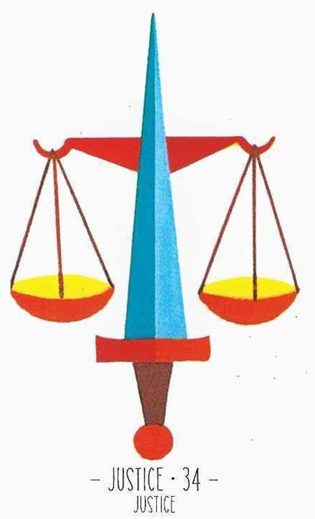

34
정의
Justice중립

그림 읽기
파란색 검을 중심으로 양쪽에 공평하게 매달린 저울. 균형을 이루는 저울이 공정성을 상징합니다.
정의공정성재판경쟁자소송갈등정당성
핵심 내용
- 정의·공정성·재판·분쟁·갈등·법·소송·적대감·경쟁자
- 정당성이나 공정함과 관련된 모든 것
- 서로의 마음이 공평함, 일한 만큼 받음
- 힘든 법적 싸움, 소송으로 갈 수 있음
- 경쟁 의식, 상대와 타협되지 않은 갈등
- 원리원칙, 냉정 = 이성적 보상
주요 메시지
정의와 균형 — 분쟁 해결과 갈등 관리, 객관적 판단이 필요한 순간
판단과 결정 — 공정하고 합리적인 접근의 요구
실생활 적용
중요한 결정과 법적 분쟁 — 소송·분쟁 상황에서 자주 등장
각자의 의무와 권리가 공평하게 취급되어야 함
학습 노트
연애운에서는 관계의 향방을 저울질하고 갈등을 평가하는 상황으로 읽습니다.
조합 메모

34번+36번 = 과한 자존심과 권력을 바탕으로 한 리더십

34번+39번 = 공정함과 이상적 가치가 관계를 굳건히